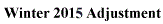
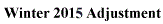

|
Mere serendipity led me to the Public Broadcasting System's "Empires" series. Within that, I discovered "The Medici: Godfathers of the Renaissance". The subtitle is no exaggeration. The Medici family directed the fortunes (in all manner of the term) of Florence, and thereby the other Italian city states, and much of Europe. This dynasty reigned from its founder Giovanni (c. 1360-1429) through the eighteenth century. As bankers, dukes, grand dukes, cardinals and popes the family dominated the Italian scene intermittently throughout that era. Their influence was profound, and felt in politics, the arts, and even science. The cathedral in Florence, left uncompleted for more than 100 years because the remaining feature, the dome, was found, after several attempts, to be thought impossible to be constructed. Filippo Brunelleschi, funded by the Medici, completed it — the world's largest at the time in 1436. Botticelli, Donatello, Leonardo, Michelangelo and others were funded by the clan over time. In the sciences Galileo was supported by the Medici. They did, however, distance themselves when his discoveries provoked the Inquisitional interest of the Vatican. The family had an in-house philosopher who translated Plato. The household's most (in)famous members: Cosimo, Lorenzo, and Lorenzo's son Pieri could fill a book in themselves, and have — "Death in Florence: The Medici, Savonarola and the Battle for the Soul of the Renaissance City" (Paul Strathern, Pegasus Books (2015, first published 2011). A Dominican monk Girolamo Savonarola, however, is the subject of this piece. Girolamo Savonarola — the name hardly trips off the tongue. But he was such a significant character in a story made for Hollywood. It's hard to believe he is not better known. We have an expression: 'a fire and brimstone preacher'. That was Savonarola. The Catholic Encyclopedia introduces Savonarola as a "Dominican reformer". His entry closes "In the beginning Savonarola was filled with zeal, piety, and self-sacrifice for the regeneration of religious life. He was led to offend against these virtues by his fanaticism, obstinacy, and disobedience." Don't we all know people like that?! The city-state of Florence was nominally a republic, as differentiated from a principality (see Machiavelli, The Prince). Florence was governed by the Signoria, a nine-member elected council. Eight were selected by the guilds, and the ninth from the populace. In ironies — which make history so intriguing — it was Lorenzo (the Magnificent) who initially supported Savonarola. Savonarola had been virtually "exiled" from Bologna to Florence by his religious order when his critical exuberance focused on the luxuries of the Dominicans. Initially Savonarola's manner of speech diminished his message of repentance and salvation. He was rejected. He traveled around Italy polishing his manner and subject matter, and when he returned to Florence in 1489 he became popular — immensely popular. Lorenzo died in 1492. His son Pieri earned the sobriquets "the Unfortunate" and "the Fatuous". Magnificence died with Lorenzo. Where Lorenzo's wealth allowed him to influence the make-up of the Signoria, Savonarola's popularity displaced Pieri. From the pulpit Savonarola railed not only against Florentine sexual morality. The city was the butt of jokes around the continent (if you get my drift). He preached about all manner of sin including pride, and greed. He claimed "vanities" were the evidence of this. Pieri and the immediate Medici family were expelled for his efforts to conclude a treaty with the French king Charles VIII who wanted passage for his army through Florence to attack Naples. The Florentine public found the very idea insulting. In the absence of the Medici, Savonarola had virtually no competitors for power. Never elected to any public office, he proclaimed "The Kingdom of Christ" where Jesus was king and Savonarola His spokesman. Like the Medici, Savonarola exercised power solely through influence. His supporters filled the Signoria. The first Bonfire of the Vanities was called for by Savonarola where residents tossed their jewelry, makeup, fashionable clothing, and books into a bonfire. Botticelli purportedly threw artwork into the blaze. City youth roamed the streets of Florence demanding "vanities" they saw be turned over. Neighbors reported neighbors for violations of Savonarola's puritanical pronouncements. Savonarola claimed that God spoke to him, and he had other visions. The Virgin Mary visited him. He predicted that a resurrected Persian Emperor Cyrus would come again and would liberate Florence as he had the Jews in the Bible. When Charles marched through, his "prophecy" was fulfilled. The monk was, however, a democrat. He expanded the councils in size and demographics. They were very much like those in ancient Athens. But like Galileo, the Italian Ayatollah caught the notice of Pope Alexander VI (a Borgia incidentally). Savonarola had been cautioned about including the Vatican as a subject of his exclamations on vice. Perhaps most damning to the Pope was Savonarola's refusal, on Florence's behalf, to join the Holy League — an alliance of states formed against France and Muslim Turkey. He was banned from preaching. After a time, he ignored it. He was excommunicated. He ignored it. Years later Niccolo Machiavelli, another Florentine, wrote "Of mankind, we may say, in general, they are fickle…" Alas, Savonarola began to lose his fervent appeal. The people of Florence deserted the monk when Alexander threatened a papal interdiction against the entire state. No religious ceremonies could be held. All sacraments would be withheld including baptism, marriage and Catholic burial. They took note. Machiavelli spoke about him specifically: "If Moses, Cyrus, Theseus, and Romulus had been unarmed they could not have enforced their constitutions for long — as happened in our time to Fra Girolamo Savonarola, who was ruined with his new order of things immediately the multitude believed in him no longer, and he had no means of keeping steadfast those who believed or of making the unbelievers to believe." (The Prince). Savonarola failed to maintain power by the force of words alone. He was horribly and repeatedly tortured and then tried. He and two supporters were hanged over a burning… bonfire; their cremains thrown into the Arno River lest their resting places become shrines for supporters.
If you wish to e-mail feedback on this article to the author, and clicking on the envelope above does not work for you, feel free to use the "Dear DP..." mail interface. |